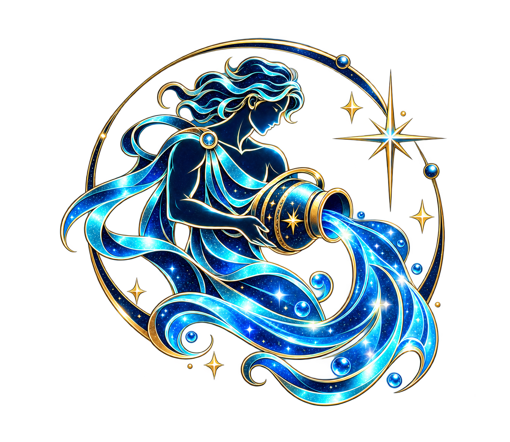

OLBIA / YACHTING
THE
SEA
IS OPEN.
SEA
IS OPEN.

AQUARIUS AGEDIGITAL PRODUCT STUDIO
Aquarius Age è il portfolio di Simone Feo: siti, applicazioni e strumenti AI progettati con identità, utilità e carattere.
SELEZIONE 2026
Una galleria delle superfici digitali presenti nel mio workspace. Le schede con badge “Preview reale” usano immagini o catture autentiche dei rispettivi progetti; la pubblicazione di ciascun progetto resta indicata separatamente.
LOOKAHEAD / FALSE
COME LAVORO
Ogni progetto parte da un'esigenza concreta e si costruisce fino a un risultato utilizzabile: interfaccia, logica, sicurezza e verifica.